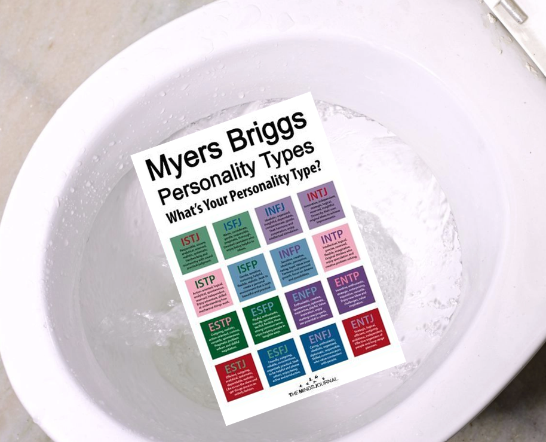
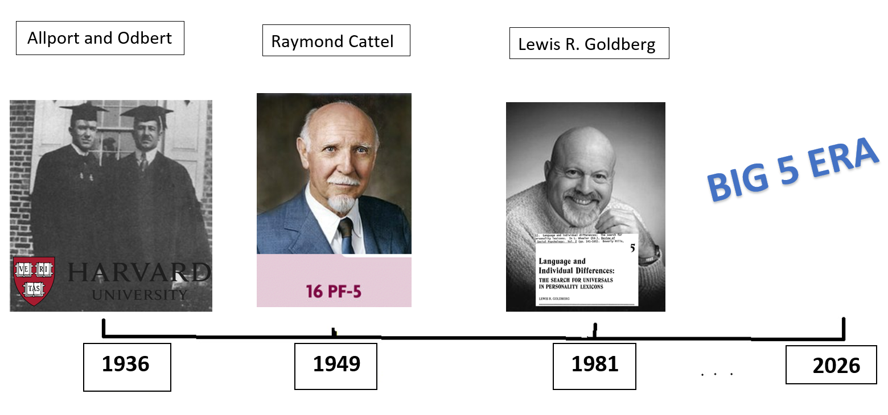
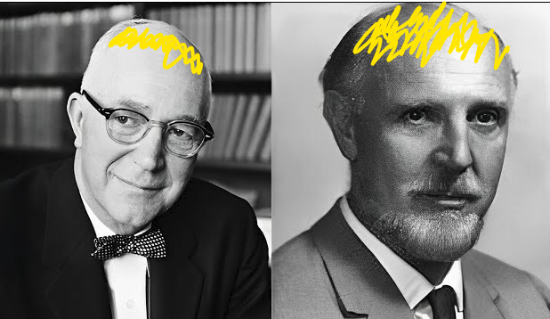

HAPPY NEW YEAR 🎉
I trust you all had an EXCEPTIONAL 2025 and, like myself have come flying into 2026 revitalised to MAXIMUM LEVELS! Today, I am absolutely over the moon to deliver an electric piece on the topic of personality and clear up a few scholarly matters. As always, the avid pupil may choose to consolidate their knowledge by completing the extracurricular activity. The STEELE INVENTORY TEST, found in Appendix A. If completed, I would be thrilled to read your responses, if sent to me I will mark them personally and provide tailored feedback.
Announcements 📣
Congratulations to Joe Widdrington, more formally known as Widzy for completing last issue's STEELEQ Test on the topic of intelligence. Widzy is a professional academic who researches vital topics to keep the hot water running. His responses demonstrate professionalism and an exemplary understanding of the content in both the rapid-fire and short answer sections. FANTASTIC WORK WIDZ!
What is personality? 🎭
Personality describes stable patterns of thinking, feeling, and behaving that remain relatively constant across different environments, situations and over an extended period of time, often spanning years and/or decades (Haslam & Smilie, 2022).

Why care about personality?
Social Creatures 🗣️
Discussions around personality can be traced back to the old days of 319 BC to the tremendous Theophrastus, “Often before now have I applied my thoughts to the puzzling questions – why it is that, while all Greece lies under the same sky and all the Greeks are educated alike, it has befallen us to have characters so variously constituted”.
Whether it's over tea and biscuits with friends or lunchroom goss, we are social animals that are motivated to understand how we are like all people, like some people, or like no other person (Murray, and Kluckhohn, 1953).
Personality Traits
Personality traits are adjectives that describe individual differences. In psychology a personality trait has a specific meaning (Haslam & Smilie, 2022).
| Principle | Description |
|---|---|
| ✔ Psychological not physical | Refers to psychological phenomena, e.g. modest not tall. |
| ✔ Enduring not transient | Refers to an enduring trait consistent over time, spanning a matter or years or decades and not a fleeting emotion. warm not sad. |
| ✔ Broad not specific | Broadly describes behaviours across a number of situations. E.g. disciplined not pizza lover. |
Extraversion, assertive, talkative and sociable. Conscientiousness, organised, efficient and reliable. Agreeableness, warm, modest and kind.
What are not personality traits?Being a fruitcake, tall, loving hot cross buns, or an arsenal supporter.
Personality predicts real world outcomes! 🔮
Studies have shown that personality traits correlate with real-world outcomes. For example, being above average on a trait x is associated with also being above average in some related real world outcome, these outcomes go to the tune of academic success and job performance.
In today's modern world of gizmos and gadgets, it is not uncommon to hear phrases like "Instagram knows me too well”. Our behavioural patterns on social media create digital footprints that are used to profile our personalities. Because personality has predictive value companies are able to tailor services and content to our liking.

For example, ~70% of people who are above average in extroversion are also above average in behaviours such as higher levels of activity on a chosen platform and having a greater number of friends in their network (Blackwell et al., 2017). Similarly, ~68% of people who are above average on the trait conscientiousness tend to be above average in associated displays, including cautious management of their profiles, posting less and expressing fewer likes on other people's posts (Amichai-Hamburger & Vinitzky, 2010).
Hypothetical example and common mishap: Franklin has just started playing tennis; his new peers describe him as sociable because his mouth does a lot of flapping. Franklin also frequents the church for gospel studies and the countryside to attend bird-watching seminars. However, Franklin is much quieter and far more reserved during his time at church and bird watching seminars. Because his talkativeness is observed only at the tennis club, it reflects situational exclusivity. If you only knew Franklin at tennis, it would not be accurate to assign him the label of highly extroverted. Because it does not reflect behavioural tendencies across environments, situations or across time for that matter.
Do you have a personality type?
No.
Myers-Briggs Nonsense Inventory
It would not suprise me if you have taken something like the Myers-Briggs Nonsense Test (MBTI), an inventory outputs your personality type like ‘INTJ’ or ‘BSBS’. If instructed to do an MBTI, I would suggest washing it down the loo and be sure to use the FULL FLUSH, not the half flush setting, very important. Personally, I would ensure my bladder was emptied prior to flushing. Figure: Myers Briggs Test Inventory If you are like me and have spent your spare time wondering how such waffle has turned into a US$2 billion personality assessment industry (Manne, 2014). A good starting point would be to investigate the authors, Katherine and Isobel Briggs, and the material that formed the basis of their ideas. Neither of the Briggs duo had formal training in psychology or psychiatry; Katherine Briggs earned a college degree in agriculture in 1893, and her daughter Isobel graduated from drama school in 1919. The Briggs pair dabbled in psychology during their spare time. Katherine was infatuated by the work of the LEGENDARY Carl Jung, but also seemingly Carl Jung himself, writing poems and songs that declared his greatness.
Figure: The Briggs duo and Carl JungCarl Jung made many lasting and influencial contributions to psychology, but his theory on personality types has been tossed in the garbage bin by the academic community. When Jung himself is put under the microscope, it is clear that his formative years provide some explanation for his thinking around rigid personality types. A theorist's work is rarely uninfluenced by their own personality and life experiences (Wrightsman, 1994).

Jung often sorted the world into vast dichotomies, black or white, positive or negative. Rarely did he describe anything as possibly being neutral, in-between or a shade of grey. As a young chap he saw himself as having two distinct personalities: personality 1, which was known to his parents and others and personality 2, reserved for tending to vital matters such as studying the mysteries of the universe (Stolorow & Atwood, 1979. P.98).
Personality Types, plotting the data ❌
Evidence against personality types can be found through studying the masses of data produced by the survey results themself. If types existed, we would expect to see the data form bimodal distributions – distinct peaks that represent a personality type. THIS IS NOT SEEN!
Figure: Hypothetical biomodal distribution representing personality types
What can be observed are normal distributions. Where people express trait-related behaviours to varying degrees along a continuum, where most people fall within two standard deviations of the mean. A result landing outside of two standard deviations from the mean, would suggest a significant difference in comparison to a wider population.
Back to Franklin, he is on average more introverted than extroverted across situations, but he is not completely without extroversion‑related expression, he is sociable and talkative at the tennis club, the type system does not acknowledge this.
Figure Franklins Hypothetical Extroversion Score
Personality Types, Reliability and Validity ❌
Evidence against personality types can be found in the reliability and validity metrics of the inventories used measure them. For example, a key reliability metric is the test-retest reliability, in the case of the nonsense Briggs, one day it outputs bananas and the other day it can output oranges, what good is that?
Because we are interested in personality for its predictive value, it would be good to have some confidence in the MBTI predictive validity, and quite frankly the proper evidence must have been misplaced. . . There is a fair bit to reliability and validity, but I don’t want to put you to sleep. In short, the MBTI does not stack up to professional benchmarks. To end on a positive, I do commend Katherine and Isobel Briggs for their enthusiasm and go-getter spirit despite having no formal training, I did wonder with a bit of formal training they might have become hall of famers in the field.
THE BIG FIVE🔥
The BIG ✋ provides a structured hierarchy of personality traits. At the top are the five most fundamental traits describing the main ways people can be different. When moving down the heirachy the personality traits become more specific in definition, eventually arriving at an instance of observable behaviour. Just as you can move top down within the heirachy, it is also possible to move bottom up, tracing an observable behaviour back to a fundamental trait, commonly how it is done in real life when you try to summarise another persons personality.
BIG 5 History📜
The BIG 5 has been in work since 1936, and is the result of massive amounts of research that uses statistical methods such as clustering and factor analysis over many large datasets and seminal works. The BIG 5 evolved on the basis of the lexical hypothesis, the idea that anything of value or important enough to a society is given a word and encoded in language. Because language is dynamic (changes over time, as you might notice if you talk to a Gen Z) the BIG 5 model is subject to and should change with time. Figure: BIG 5 timeline Stop 1 - Amazing Allport and Outstanding Odbert
In 1936, Allport & Odbert dusted off a New International Dictionary and set out to extract all adjectives that could be used to describe individual differences. Their easter egg hunt resulted in a list of 4,500 traits like impulsive, methodical, and sociable.
To make it onto their list, inclusion criteria was as follows:- Describes broad ways in which people can be different.
- Describes temporary moods or activities.
- Describes social or character judgments of personal conduct.
- Descriptions of physique, mental capacities, and developmental conditions.
Stop 2 - The Remarkable Raymond Cattell

Cattell used Allport's and Odbert's list of 4500 trait terms and reduced them into 16 fundamental personality factors using statistical methods like semantic reduction and factor analysis. He published the 16PF inventory, which boasts strong test-retest reliability, taking the test at time point one will yield highly stable results when compared to the same test taken again at later date. The 16PF comes with solid predictive validity. For example correlations with leadership effectiveness translate to ~60–68% of people scoring above average on leadership related traits also are above average in terms of leadership outcomes (Conn et ., 1994). This isn't perfect but it is still better than flipping a coin or leaving it up to complete subjective interpretation.
Stop 3 - Legendary Lewis R. Goldberg
Goldy in 1993 published "An alternative description of personality: The Big-Five factor structure" research showed across decades of psychology research the BIG FIVE personality factors constantly emerged and it was agreed upon in the academic literature. With this he officially named it the BIG FIVE.
Standardised Inventories
Before wrapping it up, it wouldn't be right for me to soil on the Myers-Briggs Nonsense Inventory without providing alternatives. Common instruments include Cattell's 16PF, NEO-PI-3 and the MMPI, all have undergone decades of research and testing and boast solid reliability and validity metrics. Additionally, these tests have been completed by masses of people, meaning that your results are compared to the established norms. The MMPI, however, is reserved for qualified psychologists and psychiatrists because it is tailored for clinical assessment and high-risk occupational contexts. Some of its features include inbuilt mechanisms to catch fibsters, attempts to “fake good” and conversely “fake bad” , infrequent and random responses. For example, if someone has approached the questionnaire in a way that makes them appear more positive than they actually are because they are trying to get a job, the MMPI can identify this. Because all the survey items have a known statistical relationship a correction can be applied, revealing a more accurate psychological profile of the person under test.
Anyhow, that is all I have for today’s psychological thriller, I hope
you have learnt something new and most importantly had a
THUMPING time reading it, I have had a THUMPING time
writing it. Unless you are an avid pupil and want to complete the
STEELE Inventory, I wish you a SPECTACTULAR week ahead!
All the best,
STEELE

Appendix A
STEELE INVENTORY TEST
🔥Rapid Fire
1. Do you have a personality type?
- a) No
- b) No
- c) No
- d) No
2. Which of the following best represents personality?
- A) Stable patterns of thinking, feeling and behaving that are consistent across environments, situations and stable over a long period of time.
- B) A behaviour that appears only in one environment
- C) A temporary mood or emotional state
- D) A behaviour observed once and never again
3. What fundamental hypothesis is the BIG 5 built upon?
- A) Lexical hypothesis, the assumption that a language describes all things of relevance to a society.
- B) The pull a rabbit out of a hat hypothesis like the Myers Briggs.
- C) Using statistical methods such as clustering and factor analysis.
- D) Grey matter.
Short Answer 📜
Explain one reason why personality matters?
References
- Allport, G. W., & Odbert, H. S. (1936). Trait-names: A psycho-lexical study. Psychological Monographs, 47(1), i–171.
- Amichai-Hamburger, Y., & Vinitzky, G. (2010). Social network use and personality. Computers in Human Behavior, 26 (6), 1289–1295.
- Blackwell, D., Leaman, C., Tramposch, R., Osborne, C., & Liss, M. (2017). Extraversion, neuroticism, attachment style and fear of missing out as predictors of social media use and addiction. Personality and Individual Differences, 116, 69–72.
- Cattell, R. B. (1994). The 16PF Fifth Edition technical manual. Institute for Personality and Ability Testing.
- Goldberg, L. R. (1993). An alternative description of personality: The Big-Five factor structure. Journal of Personality and Social Psychology, 59 (6), 1216–1229.
- Haslam, N., & Smillie, L. (2022). Personality and individual differences. Oxford University Press.
- Manne, K. (2014). The Myers-Briggs personality test is totally meaningless.Slate. https://slate.com
- Murray, H. A., & Kluckhohn, C. (1953). Personality in nature, society, and culture. Knopf.
- Stolorow, R. D., & Atwood, G. E. (1979). Faces in a cloud: Subjectivity in personality theory. Jason Aronson.
- The Myers-Briggs Company. (n.d.).Myers-Briggs history. https://eu.themyersbriggs.com/en/tools/MBTI/Myers-Briggs-history
- Theophrastus. (319 BC). Characters. (Original work; modern translations vary.)
- University of Melbourne. (2026). Mind, Brain and Behaviour 2 (PSYC10004). University of Melbourne Handbook. https://handbook.unimelb.edu.au/2026/subjects/psyc10004 (handbook.unimelb.edu.au)
- Wrightsman, L. S. (1994). Assumptions about human nature: Implications for researchers and practitioners